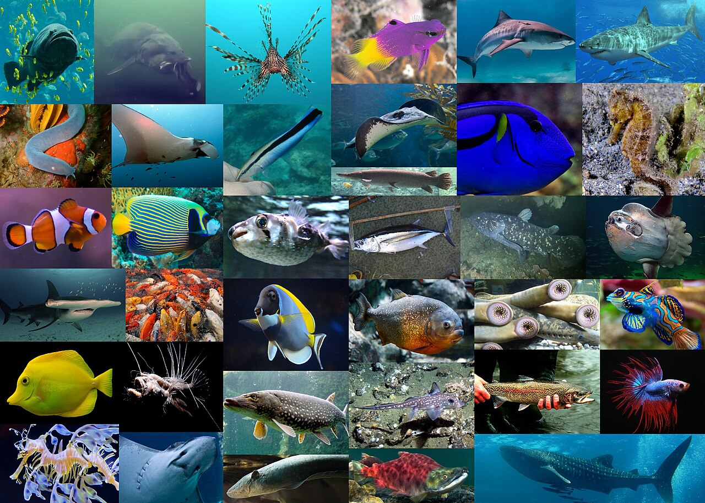
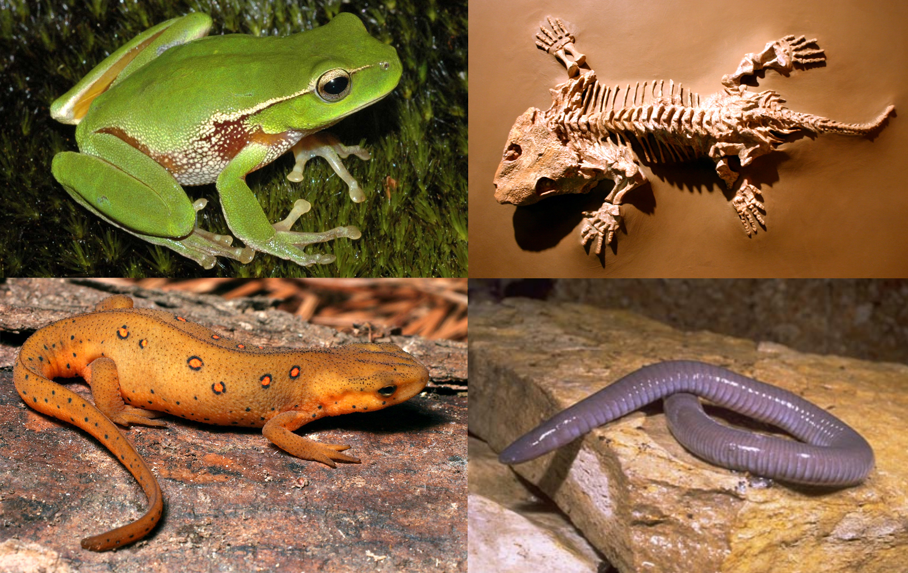
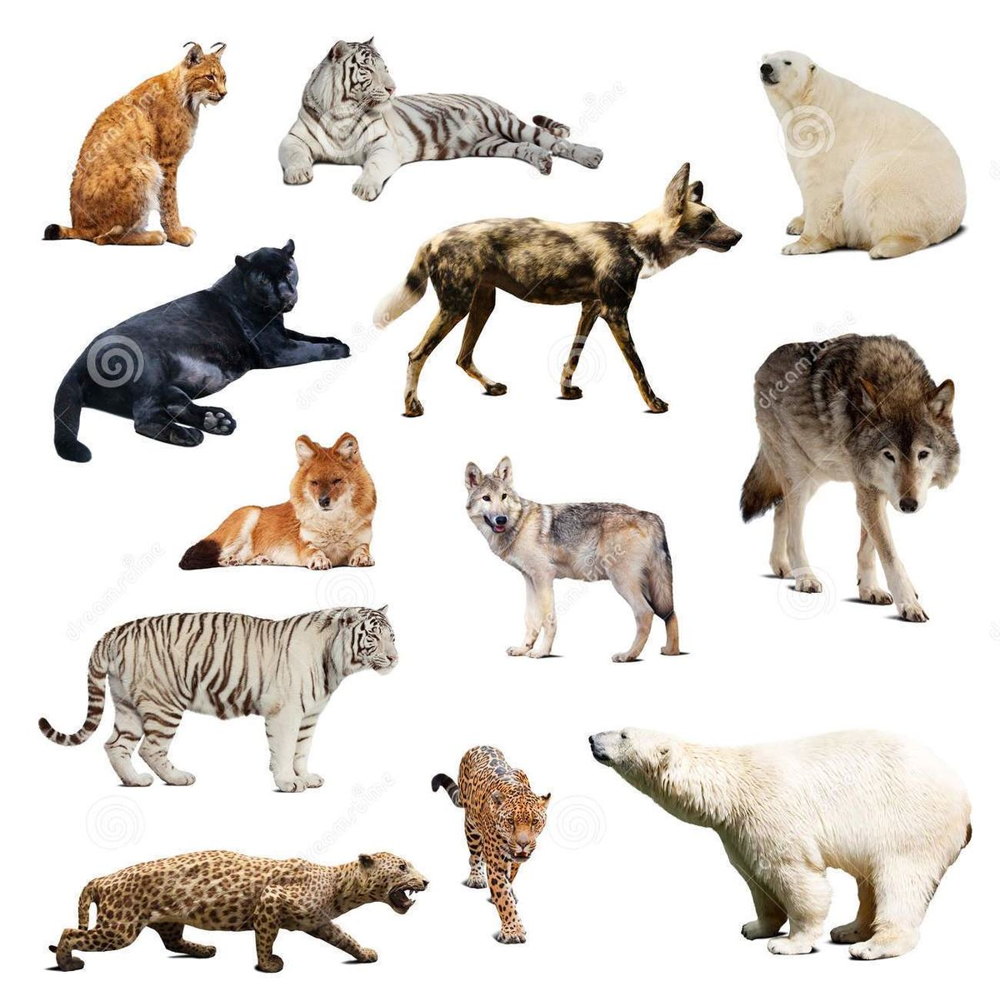

Animales vertebrados
Seres vivos que poseen columna vertebral, cráneo y un esqueleto interno formado por huesos o cartílagos. Gracias a esto pueden crecer más, proteger sus órganos y moverse con mayor facilidad. Habitan en diferentes lugares como el agua, la tierra y el aire.
.jpeg)
Tipos de animales vertebrados
Peces
Los peces son animales vertebrados que viven en el agua. Respiran por medio de branquias, las cuales les permiten obtener oxígeno del agua. Su cuerpo generalmente está cubierto de escamas y utilizan aletas para desplazarse.

Anfibios
Los anfibios son animales que pueden vivir tanto en el agua como en la tierra. Cuando nacen viven en el agua y respiran por branquias, pero al crecer desarrollan pulmones.

Reptiles
Los reptiles son animales terrestres o acuáticos que tienen la piel seca y cubierta de escamas. Respiran por pulmones desde que nacen.
.jpeg)
Aves
Las aves son animales vertebrados cubiertos de plumas. Poseen alas y la mayoría puede volar.
.jpeg)
Mamíferos
Los mamíferos son animales vertebrados que alimentan a sus crías con leche producida por la madre. La mayoría tiene pelo y nace del vientre materno.

Información General
Los animales vertebrados son un grupo de seres vivos que se caracterizan por tener un esqueleto interno y una columna vertebral que protege sus órganos y les facilita el movimiento en ambientes terrestres, acuáticos o aéreos.